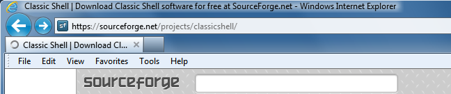
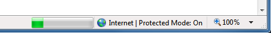
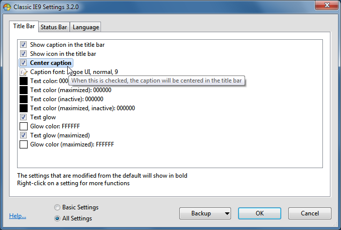
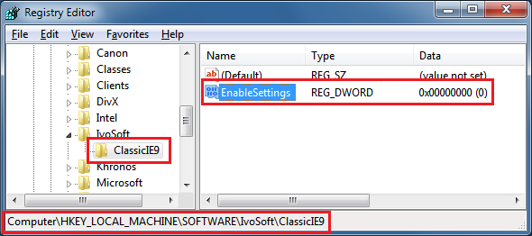

Classic IE9
Classic IE9
Classic IE9
is a
small plugin for Internet Explorer 9 that:
- Adds a caption to the title
bar so you can see the full title of the page
- Shows the security zone in the status bar
- Shows the loading progress in the status bar
See the full page title:

See the progress and the security zone:

Installation
When you run Internet Explorer for the first time after installing
Classic IE9 it may prompt you that a new addon called ClassicIE9BHO is
installed and if you want to enable it. Click on the Enable button. If
you don't get a prompt, go to Tools -> Manage addons and make sure ClassicIE9BHO is enabled. After enabling the addon you have to restart Internet Explorer to activate the plugin.
Settings
You can access the settings from Tools -> Classic IE9 Settings
or from the start menu. The settings control the color and the font of
the caption, and what information to display on the status bar.

You can choose from seeing only the basic settings, or all available
settings. Hover over each setting to see a description of what it's for.
Every setting has a default value. The default value can be constant,
or it may depend on the current system settings. Once you edit a
setting it becomes "modified" and is shown in bold. To revert to the
default value, right-click on the setting.
You can save the settings to an XML file, and later load them back.
Press the Backup button to access these functions. From there you can
also reset all settings to their default value.
Press OK to store your settings. You need to restart Internet Explorer to apply the new settings.
Administrative Settings
The settings are
per user and are stored in the registry. By default every user can edit
all of their settings. An administrator can lock specific settings, so
no user can edit them. This is achieved
by adding the setting to the HKEY_LOCAL_MACHINE\SOFTWARE\IvoSoft\ClassicIE9 registry key. The easiest way to know the registry name of a setting and its value is to modify it, and then look it up in HKEY_CURRENT_USER\Software\IvoSoft\ClassicIE9.
Sometimes you may want to lock a setting to its default value, but you
don't know what the default value is. Then create a DWORD value and set
it to 0xDEFA.
There is also a global setting EnableSettings. Set it to 0 in the
registry to prevent the users from even opening the Settings dialog:
